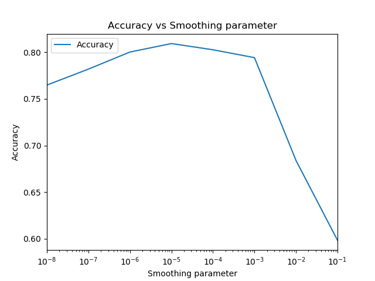
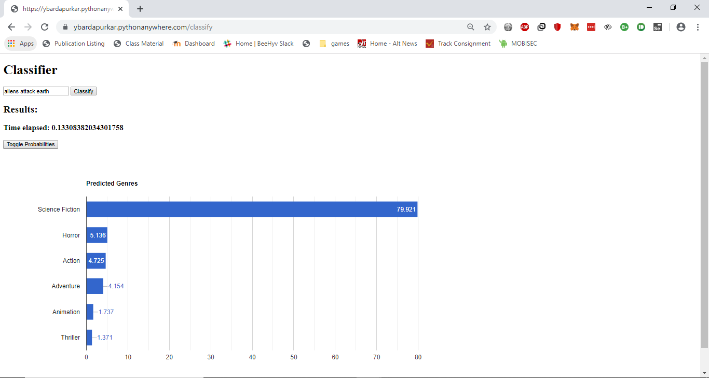
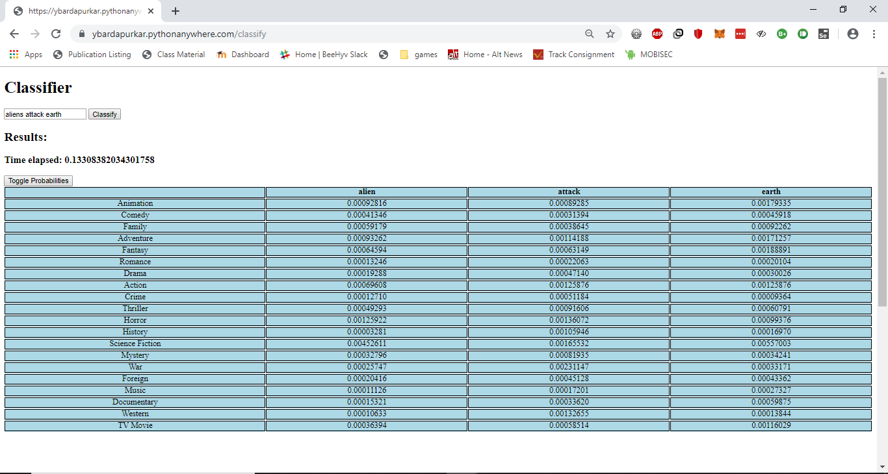

Data Mining Term Project (Fall 2019)
Movie Search and Classifier
Phase 2: Classifier
Demo Link
GitHub Link
Dataset
The dataset contains metadata for 45,000 movies listed in the Full MovieLens Dataset. The dataset consists of movies released on or before July 2017. Data points include cast, crew, plot keywords, budget, revenue, posters, release dates, languages, production companies, countries etc.
https://www.kaggle.com/rounakbanik/the-movies-dataset
Pre-processing
In the pre-processing step, for each document in the dataset, we create a dictionary of the tokens in the movie plots by the genre of the movies.
I am using PorterStemmer and stopwords from nltk package to decreaes the number of unique tokens in the dictionary.
The dictionary is of the format:
genre_term_count = {
genre_1: {
token_1: 6,
token_2: 9,
.
.
},
genre_2: {
token_3: 4,
token_4: 7,
.
.
},
.
.
}
Calculations
We use Naive Bayes classification to classify the query based on the genre, and predict the genre of the movie described in the query.
First, the query entered by the user is tokenized, and for each query token, the probability of the token belonging to each genre is calculated. Then, probability of the query belonging to the genres is calculated, using Naive Bayes.
prob(genre | token_1, token_2, ..., token_n) = prob(token_1, token_2, ..., token_n | genre) * prob(genre)
By the property of conditional independence, we can write the probability of the query belonging to a genre to be equal to the product of each term belonging to that genre. Hence, the probability becomes:
prob(genre | token_1, token_2, ..., token_n) = prob(token_1 | genre) * prob(token_2 | genre) * ..., prob(token_n | genre) * prob(genre)
Accuracy
To calculate the accuracy, we split the dataset into two parts - training data and testing data, using the slkearn module in python. We train the model on the training data, and use the testing data as input to the model and compare the genre results with the actual genres present in the test data.
A movie can have 1 to 4 genres. We compare the top 3 to 6 (2 more than actual) predicted genres and assign a score to the result.
For each genre in the test input, if that genre is present in the predicted genres, we increment the score by 1.
Finally, we divide the score with the maximum possible score possible, to calculate the percentage accuracy of the model.
for genre in actual_genres:
if genre in predicted_genres:
score += 1
total += 1
accuracy = score / total
Laplace moothing
A problem with this approach is that, if the user enters a query which has a token that is not present in the dataset, the probability for that token belonging to any genre is calculated to be 0, which makes the probability result as 0. To counter this, we add a smoothing parameter to each term frequency based on the following formula:
prob(token | genre) = ((number of occurences of 'token' in 'genre') + (parameter * prob(genre))) / (total number of tokens in 'genre') + (parameter))
This is called Laplace Smoothing.
The smoothing parameter affects the output of the model, and hence, it is important to select an appropriate value for the smoothing parameter.
I tried different smoothing parameters in the range [0.00000001 , 0.1] and calculated the accuracy using the above formula. For my dataset and accuracy calculation, I happened to achieve highest accuracy (0.8092) at smoothing parameter = 0.00001

Contributions
- Tried changing the smoothing parameter and evaluated accuracyin the range [0.00000001 , 0.1] for smoothing value.
- Added easy to understand visualizations in the classifier output


Challenges Faced
A big challenge faced in the project was to come up with a formula to measure the accuracy of the model.
Since I am using the Movies dataset, each element in the dataset is associated with multiple classes (genres), and
the project was run, the pre-processing step could be skipped after the initial run, and the pre-processing data would simply read from the file. This decreased the app deployment time from several minutes to a few seconds, and also solved the time-out problem in PythonAnywhere.
References
Links to other sections of the project